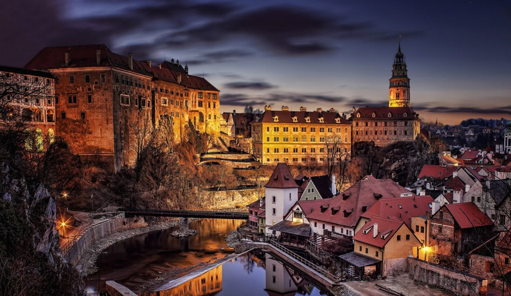

Neumarkt, Dresden
Germany
City Hall, Belfast
Northern Ireland
Parliament, Budapest
Hungary
Curtea de Arges Monastery
Romania
Hawa Mahal, Jaipur
India
Perast Bay
Montenegro
Cittá Alta, Bergamo
Italy
Bled Lake
Slovenia
Cáceres Old Town
Spain
Chefchaouen, the Blue City
Morocco
Salzburg Castle
Austria
Edimburgh cityscape
Scotland
Krka National Park
Croatia
House of Blackheads, Riga
Letonia
City Centre, Bruges
Belgium
Mostar Bridge
Bosnia-Herzegovina
York Cathedral
England
Palace of Culture and Science, Warsaw
Poland
Cesky Krumlov

Czech Republic
Inisheer Island
Ireland